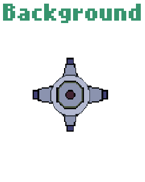

I’m a senior multi-specialist engineer with extensive experience leading teams and delivering complex projects. I have delivered on all major aspects of the Software Development Lifecycle: Full Stack development, Test Automation, SysAdmin and DevOps delivery.
My current role is as the Head of DevOps at Barclays Bank in the Chief Security Office - I lead a team of 15 engineers via my hands on approach of lead-by-example with an ethos of minimal micromanagement and multi-disciplinary agile scrum teams.
Coding wise, I am very active and in the Top100 GitHub contributors in the world with over 3,400 commits this year on a range of Gaming, AI and Cloud projects. Some examples include slack bots, sentiment analysis, Web Scraping, Python games (the hard way - in Flask not pygame), Automating automation with pipeline as a service and much more.
Gaming Industry Transition
I believe my 10 years of experience in App Development, DevOps, AI and agile background puts me in a position to add value.
That said, I am not without experience, I have been developing games for years from the ground up in assembler, Python, Java, JS and in GameMakerStudio (examples showcased in portfolio below).
I am comfortable with working on do-or-die release cycles and am experienced in growing multi- functional scrum teams but equally adept at hands-on implementation. I have developed and delivered key projects over the years from the first instalment of ApplePay in the UK, to large-scale refactoring of monolithic Online backend into microServices for ring fence banking.
It is my sole focus to do whatever it takes to transition into gaming, this is a career decision that has been bubbling up over the years as such, I am fully realistic about salary expectations and have no qualms about whatever investment is required from me to bridge the gap.